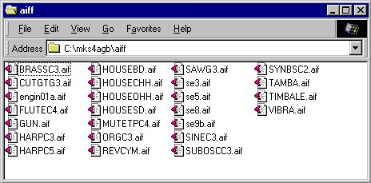
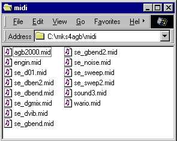

| The following explains how to handle Waveform
Data Files and Song
Data Files .
We have prepared sample data used in the Demonstration in Step 1, so please use as described below. * The user him/herself will be the one to actually create the waveform data and song data. |
Handling Waveform DataWaveform Data can be created using any commercially available waveform editing software.* Note: Please be aware that Waveform Data is to be created using commercially available software, but there are some types of Windows-Compatible waveform editing software that cannot handle AIFF input or output. A Waveform Data
File actually created with this procedure will be placed in a Waveform
Data Input Directory.
|
Handling Song Data FilesSong Data can be created using any commercially available waveform editing software.The Song Data Files actually created with this procedure will be placed in a Song Data Input Directory. In this tutorial, we will be using the sample Song Data Files used in the Step 1 Demonstration. The procedure will be complete when the samples have been placed directly into the "mid" directory created in the previous section, "Installing the mks4agb System." Download the Sample Song Data Files (MidiFiles.zip 6KB) * After unzipping the above files, please place all of them in the "midi" directory. |

Figure: aiff Directory Content after the files have been made

Figure: midi Directory Content after the files have been made
| This concludes the Waveform Data File and Song Data File Operations.
Proceed to the next section. Next: Writing to the Setup File (mks4agb.ini). |
| Please refer to the following for more details concerning this topic.
* Making Waveform Data (Link to the mks4agb System Manual) * Making Song Data (Link to the mks4agb System Manual) * To return to this page from the above links, please use the Back button. |
[ | Back | User's Manual Table of Contents | Tutorial Table of Contents| Next | ]